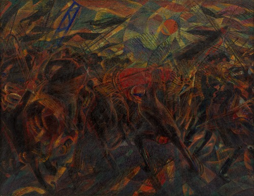

未来主义
未来主义是20世纪初在意大利兴起的艺术和社会运动。它强调速度、技术、青年和暴力，反对传统和历史的束缚。未来主义艺术家试图捕捉机械时代的动态和能量。
艺术家介绍
勃纠尼
未来派：勃纠尼 Umberto Boccioni 1882 ~ 1916 Italian
勃纠尼正了印象主义者的技巧，使用立体派的看法，融合来看待这变迁的机械时代，不像印象的灿烂，以不谐和的连法和分离的格式，用听的，看的知觉，以大脑的美术分析作为进入这吵杂的现代气氛中。
他还提出使用发动机以使某些线条或平面活动起来，这一想法由构成主义实践，至六十年代被广泛运用。 除绘画外，波丘尼的很多精力被投放在雕塑方面，他是唯一杰出的未来主义雕塑家。 1914 年，他自愿参加意大利国民军，投身到他和马利内蒂都鼓吹为“文明的洁身之道”的战争中。
巴拉
未来派：巴拉 Giacomo Balla 1871 ~ 1958 AD Italy
巴拉追求表现运动和速度，以新印象主义点彩分色方法描绘强烈的光感，同时表现出奔跑的运动感。 这样，运动物体在空间行进过程中所留下的多个渐进轨迹被全部容纳在一个单独形体上，仿佛是一张底片多次拍摄的结果。
与其他年轻的未来派画家相比，巴拉的艺术较为平和抒情，没有太多的喧嚣嘈杂之感。 他更多地关心画面的节奏和光色的抽象化处理，努力把感受、运动及内心状态融为一体。
作品赏析
无政府主义者加利的葬礼（卡洛·卡拉）
卡洛·卡拉（Carlo Carrà）于1911年用布面油画技术绘制了《无政府主义者加利的葬礼》。这幅画是纽约现代艺术博物馆收藏的一部分。卡拉运用分裂主义原则和富有表现力的绘画，给人留下了他自己参加的场景颤抖和坚定不移的印象。这是关于意大利无政府主义者安杰洛·加利的葬礼，他在 1906 年的罢工中被警察杀害。在无政府主义者违反警察发布的集会禁令后，卡拉在光影的色彩活力中与这种构图发生了冲突。
抽象速度 + 声音 （Giacomo Balla）
贾科莫·巴拉（Giacomo Balla）于1913年至14年在布面上用油画绘制了抽象速度+声音。这幅画是威尼斯佩吉·古根海姆收藏的一部分。在创作这幅画的过程中，巴拉对这一运动进行了大量研究。汽车经常是这些研究的焦点，而这幅画是其中一部分的三联画，它遵循了运动中的汽车与风景之间的关系，脱颖而出。三联画由“力线+风景”、“抽象速度+声音”和“抽象速度——汽车已过去”组成。抽象速度+声音的特点是几何化，使物体呈现出几乎完全抽象的形式，特别是考虑到代表行驶汽车声音的纵横交错的线条。从画布转移到相框的互补色关系进一步增强了场景本身的强度，从而进入了观察者的空间。
心境 II：去的人 （Umberto Boccioni）
翁贝托·博乔尼（Umberto Boccioni）于1911年用布面油画技术绘制了《心灵状态II：那些去的人》。这幅画是纽约现代艺术博物馆收藏的一部分。画作《心境II：那些走的人》是三联画的一部分，该三联画还包括《告别》和《留下来的人》。博乔尼在这里处理了现代生活方式的结果运动速度及其对人类心理变化领域的影响。
春布里亚（Gerardo Dottori）
杰拉尔多·多托里（Gerardo Dottori）于1923年在布面上用油画画了《春雨》。这幅画是佩鲁贾 Museo Civico di Palazzo della Penna 收藏的一部分。这幅画是多托里（Dottori）的一系列未来主义风景画的一部分，这些风景画主要在翁布里亚（Umbria）创作。多托里是 1929 年航空绘画未来主义宣言的签署人之一。Primavera Umbria也属于航空绘画现象，将未来主义对技术和现代交通（尤其是飞机）和新风景画的迷恋结合在一起。从飞机上观察风景，通过鸟瞰引入移动的空间视图，改变了现代艺术中对风景的感知。